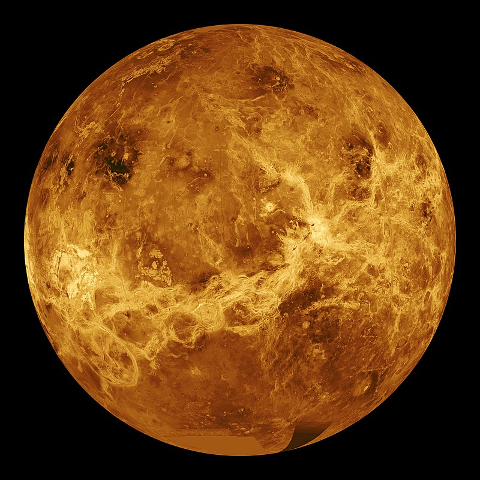

1. Sao Thủy
Sao Thủy (Mercury) hay Thủy tinh (chữ Hán: 水星) là hành tinh nhỏ nhất và gần Mặt Trời nhất trong tám hành tinh thuộc Hệ Mặt Trời,[a] với chu kỳ quỹ đạo bằng khoảng 88 ngày Trái Đất. Nhìn từ Trái Đất, hành tinh hiện lên với chu kỳ giao hội trên quỹ đạo bằng xấp xỉ 116 ngày, và nhanh hơn hẳn những hành tinh khác. Tốc độ chuyển động nhanh này đã khiến người La Mã đặt tên hành tinh là Mercurius, vị thần liên lạc và đưa tin một cách nhanh chóng. Trong thần thoại Hy Lạp tên của vị thần này là Hermes (Ερμής). Tên tiếng Việt của hành tinh này dựa theo tên do Trung Quốc đặt, chọn theo hành thủy trong ngũ hành. Do hành tinh hầu như không có khí quyển để giữ lại nhiệt lượng, bề mặt Sao Thủy trải qua sự biến đổi nhiệt độ lớn nhất trong số các hành tinh, thay đổi từ 100 K (−173 °C; −280 °F) vào ban đêm tới 700 K (427 °C; 800 °F) vào ban ngày. Trục quay của Sao Thủy có độ nghiêng nhỏ nhất trong Hệ Mặt Trời (khoảng 1⁄30 độ), nhưng hành tinh lại có độ lệch tâm quỹ đạo lớn nhất.Tại viễn điểm quỹ đạo, Sao Thủy ở cách xa Mặt Trời hơn 1,5 lần khi so với hành tinh ở cận điểm quỹ đạo. Bề mặt hành tinh có rất nhiều hố va chạm nhìn trông giống như bề mặt của Mặt Trăng, và hành tinh không còn hoạt động địa chất trong hàng tỷ năm trước. Trên Sao Thủy không có sự biến đổi thời tiết theo mùa như ở các hành tinh khác bởi vì nó không có bầu khí quyển đáng kể. Hành tinh bị khóa thủy triều với Mặt Trời do đó nó quay trên quỹ đạo rất khác so với các hành tinh khác. Khi lấy các ngôi sao cố định làm điểm mốc, nó tự quay được chính xác ba vòng trong hai chu kỳ quỹ đạo quanh Mặt Trời. Khi nhìn từ Mặt Trời, trong hệ quy chiếu quay cùng với chuyển động quỹ đạo, hành tinh hiện lên chỉ quay quanh trục một lần trong hai "năm" Sao Thủy. Do vậy nếu có người đứng trên Sao Thủy họ chỉ nhận thấy 1 ngày trong 2 năm. Bởi vì quỹ đạo Thủy Tinh nằm bên trong quỹ đạo Trái Đất (và của Sao Kim), khi nhìn từ Trái Đất hành tinh có lúc hiện lên vào buổi sáng hoặc vào buổi tối, nhưng không bao giờ có thể nhìn thấy lúc nửa đêm. Tương tự như Sao Kim và Mặt Trăng, hành tinh cũng có các pha quan sát khi nó di chuyển trên quỹ đạo. Sao Thủy không có một vệ tinh tự nhiên nào. Độ sáng biểu kiến của Sao Thủy thay đổi từ −2,0 đến 5,5; nhưng vì quá gần Mặt Trời nên nếu quan sát hành tinh này qua kính viễn vọng rất khó khăn và ít khi thực hiện được. Hai phi thuyền đã ghé thăm sao Thủy: Mariner 10 bay vào năm 1974 và 1975; và MESSENGER, được phóng lên vào năm 2004, đã quay quanh sao Thủy hơn 4.000 lần trong vòng bốn năm trước khi cạn kiệt nguồn nhiên liệu và rơi vào bề mặt hành tinh này vào ngày 30 tháng 4 năm 2015.Tàu vũ trụ BepiColombo lập kế hoạch bay đến Sao Thủy vào năm 2025...

Về địa hình: Bề mặt Sao Thủy có rất nhiều hố to nhỏ và lởm chởm như bề mặt Mặt Trăng, bao gồm các đồng bằng và hố va chạm lớn, cho thấy nó đã trải qua một thời gian yên tĩnh địa chất trong hàng tỷ năm. Những hiểu biết về địa chất Sao Thủy từng dựa trên những quan sát bằng kính thiên văn từ mặt đất và chuyến bay thám hiểm của tàu Mariner năm 1975, và các nhà khoa học có hiểu biết hạn chế về các hành tinh đất đá.Khi các dữ liệu gửi về từ tàu MESSENGER được phân tích thì hiểu biết của chúng ta dần được tăng lên. Ví dụ như các hố va chạm bất thường với các rãnh tỏa tia được phát hiện mà các nhà khoa học gọi nó là "con nhện".Các địa hình phản chiếu là những khu vực có độ phản xạ khác biệt đáng kể, như quan sát được từ kính thiên văn. Sao Thủy sở hữu các địa hình giống như các dãy núi xếp nếp, các cao nguyên giống như Mặt Trăng, núi, đồng bằng, các vách dốc đứng, và thung lũng. Lớp manti của Sao Thủy không đồng nhất về mặt hóa học, cho thấy hành tinh này đã trải qua thời điểm đầu của phóng thích macma trong lịch sử của nó. Sự kết tinh của các khoáng chất và sự đảo lộn đối lưu dẫn đến lớp vỏ phân ra nhiều lớp, không đồng nhất với những biến đổi lớn về thành phần hóa học đã được quan sát trên bề mặt hành tinh. Lớp vỏ Sao Thủy chứa lượng nhỏ sắt nhưng lại có nhiều lưu huỳnh, do trên hành tinh có các điều kiện hóa học ban đầu có tính khử mạnh hơn so với các hành tinh đất đá khác. Bề mặt chủ yếu là enstatit và forsterit đại diện cho pyroxene và olivin nghèo sắt, cùng với khoáng vật plagioclase giàu natri và các khoáng chất hỗn hợp magiê, canxi và sắt sulphua. Các vùng ít phản xạ của lớp vỏ Sao Thủy lại có hàm lượng cacbon cao mà có thể ở dạng than.
Đối với môi trường bề mặt: Tại vĩ độ 0° kinh bắc và 0° kinh tây, nhiệt độ bề mặt của Sao Thủy dao động từ 100 K (-173 °C) đến 700 K (427 °C)do sự thiếu vắng bầu khí quyển (khí quyển cực kỳ mỏng) và gradient nhiệt độ biến đổi mạnh giữa xích đạo và các cực. Vùng được Mặt Trời chiếu sáng có nhiệt độ gần 700 K tại điểm cận nhật sau đó giảm xuống 550 K ở điểm viễn nhật.[58] Ở mặt tối của hành tinh này, nhiệt độ trung bình là 110 K.Ở mặt tối của hành tinh này, nhiệt độ trung bình là 110 K.[59] Cường độ bức xạ Mặt Trời trên bề mặt Sao Thủy nằm trong khoảng 4,59 đến 10,61 lần hằng số Mặt Trời (1.370 W•m - 2). Mặc dù nhiệt độ ban ngày trên bề mặt Sao Thủy nhìn chung cực kỳ cao, nhưng các quan sát cho rằng băng (nước) có tồn tại trên Sao Thủy. Đáy của các hố va chạm sâu ở các cực chưa bao giờ tiếp xúc trực tiếp với ánh sáng Mặt Trời, và nhiệt độ ở đây duy trì dưới 102 K; rất thấp so với nhiệt độ trung bình của hành tinh này.Băng nước phản xạ rất mạnh sóng radar, và các quan sát từ kính thiên văn Goldstone đường kính 70 m và VLA trong đầu thập niên 1990 đã tiết lộ rằng có những "miền" phản xạ rất mạnh sóng ra đa ở gần các cực. Trong khi băng không phải là nguyên nhân duy nhất gây ra sự phản xạ mạnh ở các vùng này, các nhà thiên văn học vẫn tin rằng điều này có khả năng xảy ra rất cao. Các vùng đóng băng ước lượng chứa khoảng 1014–1015 kg băng, và có thể bị phủ bởi một lớp regolith ức chế sự thăng hoa của chúng.[65] So sánh với các hành tinh khác, các lớp băng ở Nam Cực trên Trái Đất có khối lượng khoảng 4×1018 kg, và chỏm băng ở cực nam của Sao Hỏa chứa khoảng 1016 kg nước.Các nhà khoa học vẫn chưa biết rõ nguồn gốc băng trên Sao Thủy, nhưng hai nguồn có thể xảy ra là từ sự thoát hơi nước trong lòng hành tinh hoặc đến từ các sao chổi rơi xuống Sao Thủy. Với khối lượng quá nhỏ, Sao Thủy không đủ sức bảo tồn bầu khí quyển của nó – các nguyên tử trong bầu khí quyển liên tục bị mất vào trong không gian vì sức hút của trọng lực quá yếu. Hành tinh có một "tầng khí quyển ngoài" rất mong manhchứa hiđrô, heli, oxy, natri, canxi, kali và các nguyên tố khác. Vùng ngoại quyển này không ổn định, các nguyên tử liên tục bị mất và bổ sung từ nhiều nguồn khác nhau. Các nguyên tử hiđrô và heli có thể do gió Mặt Trời mang đến, khuếch tán vào từ quyển của Sao Thủy trước khi thoát trở lại vào không gian. Phân rã phóng xạ của các nguyên tố trong lớp vỏ của Sao Thủy là một nguồn khác cung cấp lượng heli, cũng như natri và kali. MESSENGER đã phát hiện một tỉ lệ lớn các nguyên tố canxi, heli, hydroxide, magiê, oxy, kali, silic và natri. Hơi nước cũng có mặt, được giải phóng từ nhiều quá trình kết hợp như: sao chổi va quẹt vào bề mặt, hình thành từ sự kết hợp của hiđrô từ gió Mặt Trời và oxy từ trong đá, và thăng hoa từ các bể băng bị chôn vùi vĩnh cửu trong các hố va chạm tại hai cực tối. Việc phát hiện ra một lượng lớn nước liên quan đến các ion như O+, OH-, và H3O+ (hydroni) là một điều rất ngạc nhiên đối với các nhà khoa học.Do số lượng các ion này xuất hiện trong môi trường không gian quanh Sao Thủy, các nhà khoa học phỏng đoán rằng các phân tử này có thể được thổi đi từ bề mặt hoặc ngoại quyển bởi gió Mặt Trời.
2. Sao kim
Sao Kim (Kim tinh (chữ Hán: 金星)), còn gọi là sao Thái Bạch (太白), Thái Bạch Kim tinh (太白金星), tiếng Anh: Venus) là hành tinh thứ 2 trong hệ Mặt Trời, tự quay quanh nó với chu kỳ 224,7 ngày Trái Đất. Xếp sau Mặt Trăng, nó là thiên thể tự nhiên sáng nhất trong bầu trời tối, với cấp sao biểu kiến bằng - 4.6, đủ sáng để tạo nên bóng trên mặt nước. Bởi vì Sao Kim là hành tinh phía trong tính từ Trái Đất, nó không bao giờ xuất hiện trên bầu trời mà quá xa Mặt Trời: góc ly giác đạt cực đại bằng 47,8°. Sao Kim đạt độ sáng lớn nhất ngay sát thời điểm hoàng hôn hoặc bình minh, do vậy mà dân gian còn gọi là sao Hôm, khi hành tinh này hiện lên lúc hoàng hôn, và sao Mai, khi hành tinh này hiện lên lúc bình minh. Sao Kim được xếp vào nhóm hành tinh đất đá và đôi khi người ta còn coi nó là "hành tinh chị em" với Trái Đất do kích cỡ, gia tốc hấp dẫn, tham số quỹ đạo gần giống với Trái Đất. Tuy nhiên, người ta đã chỉ ra rằng nó rất khác Trái Đất trên những mặt khác. Sao Kim bị bao bọc bởi lớp mây dày có tính phản xạ cao chứa axít sunfuric, và khiến chúng ta không thể quan sát bề mặt của nó dưới bước sóng ánh sáng khả kiến. Mật độ không khí trong khí quyển của nó lớn nhất trong số bốn hành tinh đất đá, thành phần chủ yếu là cacbon dioxide. Áp suất khí quyển tại bề mặt hành tinh cao gấp 92 lần so với của Trái Đất. Với nhiệt độ bề mặt trung bình bằng 735 K (462 °C), Sao Kim là hành tinh nóng nhất trong Hệ Mặt Trời. Nó không có chu trình cacbon để đưa cacbon trở lại đá và đất trên bề mặt, do vậy không thể có một tổ chức sống hữu cơ nào có thể hấp thụ nó trong sinh khối. Một số nhà khoa học từng cho rằng Sao Kim đã có những đại dương trong quá khứ,nhưng đã bốc hơi khi nhiệt độ hành tinh tăng lên do hiệu ứng nhà kính mất kiểm soát.Nước có thể đã bị quang ly, và bởi vì không có từ quyển hành tinh, hiđrô tự do có thể thoát vào vũ trụ bởi tác động của gió Mặt Trời. Toàn bộ bề mặt của Sao Kim là một hoang mạc khô cằn với đá và bụi và có lẽ vẫn còn núi lửa hoạt động trên hành tinh này.

Về mặt địa lý: Nghiên cứu bề mặt Sao Kim vẫn còn có nhiều vấn đề mang tính phỏng đoán cho đến khi một số bí mật của nó được khám phá trong ngành khoa học hành tinh ở thế kỷ XX. Các tàu đổ bộ trong sứ mệnh Venera vào các năm 1975 và 1982 đã chụp lại bức ảnh bề mặt được bao phủ bởi đá trầm tích và những tảng đá góc cạnh tương đối. Bề mặt hành tinh đã được vẽ chi tiết từ tàu Magellan năm 1990–91. Trên bản đồ hành tinh hiện lên những chi tiết cho thấy khả năng có hoạt động của núi lửa, và sự có mặt của lưu huỳnh trong khí quyển còn cho thấy khả năng có một số vụ phun trào gần đây. Khoảng 80% diện tích bề mặt Sao Kim bao phủ bởi những đồng bằng núi lửa phẳng, hay 70% đồng bằng có những rặng núi và 10% đồng bằng có thùy. Hai "lục địa" cao nguyên chiếm phần còn lại của diện tích bề mặt, một lục địa nằm ở bán cầu bắc và lục kia nằm ở ngay phía nam xích đạo hành tinh. Các nhà khoa học đặt tên lục địa phía bắc là Ishtar Terra, theo tên thần Ishtar, thần tình yêu của người Babylon, lục địa có diện tích xấp xỉ Australia. Ngọn Maxwell Montes, núi cao nhất trên Sao Kim, nằm ở lục địa Ishtar Terra. Chiều cao của nó xấp xỉ 11 km tính từ độ cao trung bình của bề mặt hành tinh. Lục địa bán cầu nam có tên Aphrodite Terra, theo tên của thần tình yêu trong thần thoại Hy Lạp, và là lục địa cao nguyên lớn nhất với diện tích xấp xỉ lục địa Nam Mỹ. Có rất nhiều dấu vết đứt gãy địa chất ở lục địa này.
Về mặt địa hình: Địa mạo Sao Kim hiện lên cho thấy có sự ảnh hưởng của hoạt động núi lửa. Sao Kim từng có số núi lửa nhiều như của Trái Đất, và có 167 núi lửa có đường kính trên 100 km. Vùng chứa nhiều núi lửa như thế duy nhất trên Trái Đất tại đảo Lớn của Hawaii. Đây không phải vì Sao Kim có nhiều hoạt động núi lửa hơn Trái Đất mà bởi vì lớp vỏ của nó già hơn. Vỏ đại dương của Trái Đất liên tục được tái tạo thông qua sự hút chìm tại biên giới giữa các mảng kiến tạo, và có tuổi trung bình bằng 100 triệu năm, trong khi các nhà khoa học tính toán bề mặt Kim Tinh có tuổi 300 - 600 triệu năm.
Có một số manh mối thể hiện vẫn còn hoạt động núi lửa trên Sao Kim. Trong chương trình Venera của Liên Xô, các tàu Venera 11 và Venera 12 đã ghi nhận được các luồng tia sét, và Venera 12 còn ghi được tiếng sét nổ mạnh ngay sau khi nó đổ bộ. Tàu Venus Express của Cơ quan vũ trụ châu Âu cũng chụp được hình ảnh tia sét trong lớp khí quyển trên cao.Có thể tro bay ra từ núi lửa đã gây ra sét trong bầu khí quyển hành tinh. Một dữ liệu khác đến từ mật độ tập trung của lưu huỳnh dioxide trong khí quyển, mà các nhà khoa học nhận thấy đã giảm đi 10 lần trong giai đoạn 1978 đến 1986. Hiện tượng này có thể giải thích bằng núi lửa hoạt động trước đó đã phun lưu huỳnh dioxide ra khí quyển.Trong năm 2008 và 2009, bằng chứng trực tiếp đầu tiên cho quá trình hoạt động núi lửa đang diễn ra đã được Venus Express quan sát, dưới dạng bốn điểm nóng hồng ngoại được định vị tạm thời bên trong vùng kẻ nứt Ganis Chasma, nằm gần ngọn núi Maat Mons. Ba trong số các điểm đã được quan sát nhiều hơn một quỹ đạo liên tục. Những điểm này được cho là đại diện cho dòng dung nham vừa mới được giải phóng bởi các vụ phun trào núi lửa.Thực tế nhiệt độ không được xác định, vì không thể đo được kích thước của các điểm nóng, nhưng có khả năng nằm trong khoảng 800–1.100 K (527–827 °C), so với mức nhiệt độ thông thường 740 K (467 °C). Có khoảng 1.000 hố va chạm phân bố khắp bề mặt Sao Kim. Trên những thiên thể khác như Trái Đất hay Mặt Trăng, các hố va chạm thể hiện quá trình biến mất dần của chúng. Trên Mặt Trăng, sự biến mất là do những thiên thạch theo thời gian rơi xuống làm mờ đi hố già tuổi hơn, trong khi trên Trái Đất, miệng hố bị phong hóa bởi mưa và gió. Trên Sao Kim, khoảng 85% hố va chạm vẫn còn ở trạng thái nguyên thủy. Số lượng hố va chạm, cùng với điều kiện được "bảo tồn" tốt của chúng, cho thấy hành tinh trải qua lần tái tạo bề mặt gần đây nhất cách khoảng 300 - 600 triệu năm trước, đi kèm với sự tắt dần của các núi lửa.Trong khi lớp vỏ Trái Đất liên tục chuyển động, các nhà khoa học nghĩ rằng trên Sao Kim các vỏ không có sự di chuyển này. Không có hoạt động kiến tạo mảng để tiêu tán nhiệt ra khỏi lớp phủ, thay vào đó Sao Kim trải qua chu trình tuần hoàn trong đó nhiệt độ lớp phủ tăng cao cho đến khi đạt nhiệt độ tới hạn làm yếu/tan chảy lớp vỏ. Do vậy trong chu kỳ trên 100 triệu năm, sự hút chìm xuất hiện trên hầu như toàn bộ hành tinh, làm tái tạo mới hoàn toàn bề mặt lớp vỏ.
3. Quá trình hình thành của Trái Đất
Với mô hình hiện đại của Hệ Mặt trời cùng việc các mẫu đá cổ nhất trên Trái đất được tìm thấy có tuổi thọ hơn 4 tỷ năm (4.03 tỷ tại Canada và 4,4 tỷ tại Tây-Trung Australia), các nhà khoa học ngày nay đã có thể kết luận Trái đất hình thành vào khoảng 4,7 tỷ năm trước, là kết quả của sự tạo thành do hấp dẫn của hàng triệu khối đá lớn nhỏ và bụi, khí trên một dải vật chất có quĩ đạo quanh Mặt trời. Ban đầu, Trái đất chỉ là một hành tinh chết nóng rực, các kim loại nặng chìm dần vào trong và nóng chảy, đẩy các vật chất nhẹ lên trên và nguội dần. Trái đất lúc này có hình dạng là một quả cầu khổng lồ màu đen với những vêt nứt sáng do phần vật chất nóng chảy bên trong. Chính các vết nức này sẽ còn tiếp tục tồn tại hàng tỷ năm nữa, thường xuyên trở thành nhân tố quyết định cho sự tồn vong của sự sống trên hành tinh.

4,3 tỷ năm trước, một hành tinh với kích thước của Sao Hỏa tên là Theia (cùng hình thành trong giai đoạn đầu của Hệ Mặt trời) tiến về phía Trái đất. Cú va chạm là một thảm họa thật sự, nhưng lại cũng là điều kiện tiên quyết cho sự sống của chúng ta sau này. Trước tiên, nó làm mật độ vật chất trên Trái đất trở nên đều hơn, giống như khi bạn xóc tung một lọ đựng nhiều loại kẹo cùng lúc. Tiếp theo... nó tạo thành Mặt Trăng. Vật chất từ bề mặt của cả 2 hành tinh bắn tung lên không gian, tạo thành một dải vật chất chuyển động trên quĩ đạo quanh Trái đất, giống như vành đai của Sao Thổ và các hành tinh lớn ngày nay. Lực hấp dẫn lần nữa lại đóng vai trò của đấng sáng tạo, nó tập hợp các mảnh vụn lại, tạo thành Mặt Trăng. Lúc này, Mặt Trăng ở rất gần Trái đất và Trái đất thì quay rất nhanh. Nếu mọi chuyện cứ tiếp diễn như vậy thì sự sống đã khó mà hình thành. Nhưng nhờ sự có mặt của Mặt Trăng mà Trái đất quay chậm dần lại do ảnh hưởng của hấp dẫn, còn lực li tâm lại đẩy Mặt Trăng xa dần, tránh cho chúng ta những cơn thủy triều còn mạnh hơn hàng chục lần những đợt sóng thần khủng khiếp nhất ngày này. Đó là thời kì khoảng 4,1 tỷ năm trước khi đại dương và khí quyển (không có oxy) đang hình thành. Khoảng 4,1 tới 3,8 tỷ năm trước, Trái đất bị lấp đầy bởi đại dương do sự lạnh đi của Trái đất cho phép sự tồn tại của nước lỏng. Các tiểu hành tinh nhỏ và các thiên thạch liên tiếp bắn phá Trái đất, chúng là các tàn dư trong thời kì đầu của Hệ Mặt trời. Chính các thiên thạch này mang theo các tinh thể ngậm nước và cả các hợp chất hữu cơ đơn giản nhất vào lòng đại dương, nơi sự sống sẽ phát sinh sau này. 3,8 tỷ năm trước, Trái đất bước vào thời kì Archaean (đại thái cổ). Đây là giai đoạn giữa của thời kì tiền cambri. Từ các hợp chất hữu cơ đầu tiên mang đến ừ các thiên thạch tấn công Trái đất, axit amin hình thành trong đại dương, các tế bào đơn giản nhất đầu tiên được hình thành. Khác với chúng ta ngày nay, chúng được cấu tạo trên cơ sở của các phân tử RNA (Ribonucleic acid, khác với DNA là Deoxyribonucleic acid cấu tạo nên động thực vật hiện nay). Ngày nay chúng ta đã tìm thấy hóa thạch của những dạng sống đâu tiên có tuổi lớn nhất là 3,5 tỷ năm. Các tế bào đầu tiên từ ban đầu là dạng sống đơn bào, kết hợp dần thành các lớp dày hơn là các khối stromatolite, chúng là dạng sống đầu tiên xuất hiện quá trình quang hợp cung cấp oxy cho hành tinh chúng ta. Hợp chất glucose đơn giản đầu tiên (đường) cũng đã hình thành.

630 triệu năm trước, nguồn dung nham nóng chảy trong lòng Trái đất được đánh thức, trở thành vị cứu tinh cho sự sống trên hành tinh. Các núi lửa sau hàng trăm triệu năm ngủ yên đã thức giấc và phun trào, chúng phá vỡ một số điểm đóng băng trên bề mặt Trái đất, phun dung nham lên bề mặt, và quan trọng nhất trong đó là khí cacbonic. Như ta đã biết, cacbonic chính là tác nhân gây nên hiệu ứng nhà kính, và lúc này đó lại chính vị cứu tinh cho sự sống trên Trái đất. Không khí hấp thụ được nhiệt độ của Mặt trời cùng với sự phun trào dung nham làm băng tan dần tạo điều kiện cho những dạng sống sâu nhất dưới đại dương vẫn còn tồn tại nay lại có cơ hội tiến hóa. Quá trình tan băng này kéo dài khoảng vài triệu năm. 580 triệu năm trước, thực vật đa bào đã khá phổ biến và cũng là thời kì đầu tiên của các động vật thân mềm, ngày nay chúng ta đã tìm được những hóa thạch của các động vật thân mềm có tuổi tương đương với thời kì này. 540 triệu năm trước, oxy tiếp tục được bớm đầy khí quyển và ở tầng trên của khí quyển trực tiếp đón nhận ánh sáng Mặt trời, một lớp khi mới được hình thành từ oxy, đó là ozone, nó ngăn cản các bức xạ tia cực tím xuyên vào khí quyển, và đây chính là điều kiện để sự sống xâm chiếm lên mặt đất (lúc này những mảng lục địa đầu tiên đã xuất hiện). Khoảng 530 triệu năm trước, Trái đất bước vào thời kì Paleozoic (đại cổ sinh), bắt đâu bằng kỉ đầu tiên là kỉ Cambri. Đây là khoảng thời gian bùng nổ của sự phát triển sinh vật, kéo dài khoảng 30 triệu năm, gọi là thời kì bùng nổ Cambri. Ở dưới biển, các loại động vật phức tạp hơn xuất hiện, điển hình nhất là bọ ba thùy và các họ hàng của nó. Ngoài ra đây là lần đầu tiên có sự xuất hiện của động vật săn mồi, những loài trực tiếp tấn công loài khác lam thức ăn thay vì ăn thực vật nhỏ hay các xác chết trôi nổi. Chẳng hạn như trong hình dưới là một con Anomalocaris đang chuẩn bị hạ sát con mồi của mình là 1 con bọ ba thùy. 505 triệu năm trước, giai đoạn tiếp theo của sự phát triển động thực vật bắt đầu, đây là kỉ thứ 2 của Paleozoic, kỉ Ordovic (Ordovician). Đại dương xâm chiếm toàn bộ phần Bắc của Trái đất và sự phát triển sinh vật tập trung ở lục địa phía Nam là Gondwana. Đây là thời kì phát triển mạnh mẽ của các sinh vật thân mềm và đặc biệt là sự bùng nổ của loài cá. Các loài cá đầu tiên xuất hiện chúng thống trị đại dương suốt từ thời kì này tới kỉ Silur (Silurian, 440-410 triệu năm trước) và Devon (Devonian, 410-360 triệu năm trước). Kỉ Devon, 410 triệu năm trước, một loài cá tên là Tetrapods tiếp xúc với đất liền và dùng vây của nó để bò dần lên. Sau hàng triệu năm tiến hóa, chúng đã lên hẳn mặt đất, tiến hóa thành các động vật đầu tiên trên cạn, tiếp theo chúng là loài Ichthyostega. Ngoài ra, đây cũng là thời kì phát triển của các loài côn trùng khá giống ngày nay như những con chuồn chuồn hay các loài chân đốt, nhưng với những kích thước lớn hơn rất nhiều. Không chỉ thế, các loài thực vật cũng phát triển với kích thước khổng lồ, cao tới hàng chục mét do nồng độ cao của oxy trong không khí.

Từ 360 triệu đến 286 triệu năm trước kỉ Carbon (còn gọi là kỉ than). Đây là thời kì 1 loạt cây cối chết đi và nằm lại trong lòng đất, kết thành các mỏ than đá ngày nay. Quan trọng nhất cần nhắc tới, đây là thời kì động vật bắt đầu đẻ trứng trên mặt đất. Ta nên biết rằng trước giai đoạn carbon này, các loài động vật ngay cả để bắt đàu xâm chiếm thế giới trên cạn như một số loài bò sát, ếch nhái nhưng vẫn có thói quen đẻ trứng dưới nước do con non trong trứng cần có đủ độ ẩm mới có thể tồn tại tới khi trào đời. Nhưng đến thời kì này, bò sát đã tiến hóa để có thể đẻ ra những quả trứng có chứa nước cung cấp trực tiếp cho con non. 2 loài đầu tiên tổ tiên của thế hệ bò sát sau này là Hylonomus và Paleothyris. Các cây lớn chết đi tạo thành than đá, trong khi đó lại một thế hệ cũng không kém phần to lớn xuất hiện thay thế, đó là những cụm rêu cao tới 30m, những cây cỏ đuôi ngựa và dương xỉ cao trên 15m, chúng tràn ngập khắp lục địa Gondwana. Từ 286 đến 248 triệu năm trước, Trái đất bước vào thời kì cuối cùng của đại cổ sinh Paleozoic, đó là kỉ Permy (Permian). Đây là thời kì rất quan trọng trong sự phát triển của động vật. Một số loài bò sát tiến hóa thành các giai đoạn đầu của động vật có vú, chẳng hạn như loài therapsids trong hình dưới đã tiến hóa từ loài Dimetrodon, nó đã có khuôn mặt và hàm răng rất giống các loài động vật có vú ngày nay, nó cũng là một trong những kẻ săn mồi đáng sợ của thời Permy. Tuy nhiên, thật đáng tiếc, động vật có vú đã không phát triển dễ dàng như vậy, loài therapsids cùng rất nhiều loài động vật (chủ yếu là bò sát) thời đó đã là nạn nhân của thảm họa tuyệt chủng khủng khiếp nhất trong lịch sử Trái đất: đại tuyệt chủng Permi. Đến nay, vẫn còn nhiều ý kiến chưa thống nhất về nguyên nhân của thảm họa này, nhưng đa phần ý kiến cho rằng nguyên nhân của cuộc đại tuyệt chủng là sự hợp nhất hai lục địa Laurasia và Gondwana thành đại lục địa Pangaea. Cú va chạm làm xáo trộn địa hình của cả 2 lục địa lớn dẫn đến động đất, núi lửa trên qui mô toàn lục địa hủy diệt các sinh vật. Nhưng nơi bị tiêu diệt ghê gớm nhất lần nàylaij là các loài sinh vật ở đại dương, có tới 95% số loài đã vĩnh viễn biến mất sau đại tuyệt chủng này. Cuộc đại tuyệt chủng này đánh dấu kết thúc kỉ Permi, chuyển sang thời kì tiếp theo gọi là Mesozoic (đại trung sinh). 248 triệu năm trước là khởi điểm của đại Mesozoic, khi cuộc đại tuyệt chủng đã kết thúc. Tại đại dương cũng như trên cạn, sự biến đổi đã ngừng lại, nhưng điều kiện tự nhiên đã không còn như trước, và một số loài tỏ ra thích nghi tốt hơn các loài khác, chúng phát triển trở thành những kẻ thống trị hành tinh. Kỉ đầu tiên của Mesozoic là kỉ Trias (một số tài liệu Việt Nam thường dịch là kỷ Tam Điệp), nơi đánh dấu sự bắt đầu của cái mà người ta gọi là triều đại của khủng long. Đây là thời kì phát triển hưng thịnh nhất trong lịch sử của loài bò sát. Tổ tiên của động vật có vú như những con Cynodonts vẫn tiếp tục tồn tại và duy trì cho sự bùng nổ của động vật có vú và kết quả cuối cùng là chúng ta sau này. Tuy nhiên vào thời kì Trias này, các động vật có vú và cả các loài cá đều tỏ ra hết sức lép vế so với sự thống trị của khủng long. Chúng có mặt ở khắp nơi với kích thước từ nhỏ tới lớn, và ở đủ dạng sống. Trong khi ở đáy đại dương, những kẻ thống trị là Ichthyosaurus hay là Nothosaurus trong một thời gian dài, thì trên mặt đất khủng long còn thịnh vượng hơn. Chúng chia ra làm 3 nhóm chính là theropods (các loài săn mồi như T-rex, Coelophysis hay Allosaurus), nhóm sauropod gồm những con thằn lằn cổ dài như Apatosaurus, Mamenchisaurus và cuối cùng là nhóm ornithischian gồm các loài như Triceratops (khủng long 3 sừng), Stegosaurus (khủng long áo giáp) hay cả những con Iguanodon như bạn từng thấy trong bộ phim nổi tiếng Dinosaur của Walt Disney. Hình dưới là một con T-rex (Tyranosaurus Rex), loài khủng long săn mồi nổi tiếng nhất của kỉ Trias. Australopithecus sau này tiến hóa thành Homo habilis với mức độ giống con người ngày nay nhiều hơn, và rồi xa hơn là Homo ergaster, rồi Homo erectus với ít lông hơn, chỉ tập trung chính ở trên đầu, các chức năng cơ thể khá giống với con người ngày nay. Homo erectus được cho là tổ tiên đầu tiên ở dạng người của loài người chúng ta ngày nay, với bộ não có kích thước khoảng 74% bộ não của con người hiện đại. Đó là khoảng 1,8 triệu năm trước. Cho tới tận 100.000 năm trước, loài người có trí tuệ đầu tiên mới thật sự xuất hiện, đó là những người Homo sapien. Họ là nhánh phát triển nhất về trí tuệ trong số các nhánh phát triển của thế hệ các loài vượn người Homo. Với sự sa mạc hóa của châu Phi, họ vượt qua ranh giới giữa châu Phi và châu Âu, phân tán trên cả châu Âu và châu Á (ban đầu là vùng Trung Đông) ngày nay và sống cùng các loài động vật kì lạ trong thời gian của kỉ băng hà như những con Mammoth (voi ma mút) hay nhưng loài động vật có vú có hình dáng ít nhiều khác biệt với động vật ngày nay.

Khi kỉ bằng hà bước vào giai đoạn kết thúc khoảng 12.000 năm trước, con người mới thật sự bước vào thời đại của mình với những tổ chức xã hội từ nhỏ đến lớn, từ đơn giản đến phức tạp. Nếu như khủng long từng là loài thống trị Trái đất lâu nhất trong lịch sử của hành tinh này thì ngược lại, con người chúng ta mới chiếm lĩnh nó trong một khoảng thời gian quá ngắn nhưng lại là loài có tốc độ phát triển ghê gớm nhất về cả dân số, sự phát triển của xã hội và khoa học kĩ thuật. Và những gì chúng ta có hôm nay, kể cả những dòng bạn vừa đọc, chính là kết quả của tất cả quá trình này!
4. Sao Hỏa
Sao Hỏa hay Hỏa tinh (chữ Hán: 火星 (bính âm: Huǒxīng), tiếng Anh: Mars) là hành tinh thứ tư tính từ Mặt Trời và là hành tinh có kích thước bé thứ hai trong Hệ Mặt Trời, chỉ lớn hơn Sao Thủy. Nó thường được gọi với tên khác là "Hành tinh Đỏ ", do sắt oxide có mặt rất nhiều trên bề mặt hành tinh làm cho bề mặt nó hiện lên với màu đỏ đặc trưng. Sao Hỏa là một hành tinh đất đá với một khí quyển mỏng, có những đặc điểm trên bề mặt có nét giống với cả các hố va chạm trên Mặt Trăng và các núi lửa, thung lũng, sa mạc và chỏm băng ở cực trên của Trái Đất. Ngày và mùa trên sao Hỏa tương đối giống Trái Đất, do chu kì tự quay và độ nghiêng của trục quay so với mặt phẳng xích đạo là như nhau. Ngọn núi Olympus Mons trên sao Hỏa là núi lửa lớn nhất và cao nhất từng được biết tới trong Hệ Mặt Trời, còn hẻm núi Velles Marineris là một trong những hẻm núi lớn nhất trong Hệ. Lòng chảo Borealis bằng phẳng nằm ở bán cầu Bắc bao phủ tới 40% bề mặt hành tinh và có thể là một hố va chạm khổng lồ trong quá khứ. Hai mặt trăng Phobos và Deimos của sao Hỏa đều nhỏ và có hình thù kì lạ. Sao Hỏa đã được thám hiểm bởi vài con tàu vũ trụ. Mariner 4 là con tàu đầu tiên đặt chân lên ngôi sao đỏ. Được NASA phóng vào không gian ngày 28 tháng 11 năm 1964, nó tiếp cận gần hành tinh nhất vào ngày 15 tháng 7 năm 1965. Mariner 4 đã phát hiện vành đai phóng xạ yếu của sao Hỏa, khoảng 0,1% của Trái Đất, và chụp những bức hình đầu tiên của một hành tinh khác trong vũ trụ. Tàu vũ trụ đặt chân lên sao Hỏa gần đây nhất là Tianwen-1 của CNSA và tàu thám hiểm Zhurong vào ngày 14 tháng 5 năm 2021. Tàu thám hiểu Zhurong đựoc phóng thành công vào ngày 22 tháng 5 năm 2021, giúp Trung Quốc trở thành quốc gia thứ hai phóng thành công một tàu thám hiểm lên sao Hỏa, sau Mĩ.

Về đặc tính vật lý: Bán kính của Sao Hỏa xấp xỉ bằng một nửa bán kính của Trái Đất, với diện tích bề mặt chi hơi nhỏ hơn tổng diện tích đất liền của Trái Đất.Tỷ trọng của nó nhỏ hơn của Trái Đất, với thể tích chỉ bằng 15% thể tích Trái Đất và khối lượng chỉ bằng 11%, do đó chỉ bằng 38% trọng lực bề mặt của Trái Đất. Trong khi Sao Hỏa có đường kính và khối lượng lớn hơn Sao Thủy thì Sao Thủy lại có tỷ trọng cao hơn. Điều này làm cho hai hành tinh có giá trị gia tốc hấp dẫn tại bề mặt gần bằng nhau-của Sao Hỏa chỉ lớn hơn có 1%. Sao Hỏa cũng là hành tinh có giá trị kích thước, khối lượng và gia tốc hấp dẫn bề mặt ở giữa khi so với Trái Đất và Mặt Trăng (Mặt Trăng có đường kính bằng một nửa của Sao Hỏa, trong khi Trái Đất có đường kính gấp đôi Hỏa Tinh; Trái Đất có khối lượng gấp chín lần khối lượng Sao Hỏa trong khi Mặt Trăng có khối lượng chỉ bằng một phần chín so với Hỏa Tinh). Màu sắc vàng cam của bề mặt Sao Hỏa là do lớp phủ chứa sắt(III) oxide, thường được gọi là hematit, hay rỉ sét.Những màu sắc bề mặt phổ biến khác bao gồm vàng, nâu, màu nâu vàng và hơi xanh lục, tùy thuộc vào những khoáng sản có mặt.

Về địa chất: Tuơng tự Trái Đất, Sao Hỏa đặc trưng với một lõi kim loại dày bao phủ bởi một lớp vật chất ít dày hơn. Những mô hình hiện tại về bên trong Hỏa Tinh chỉ ra lõi của nó chứa chủ yếu là sắt và nickel với khoảng 16-17% lưu huỳnh. Lõi sắt(II) sunfit này có trạng thái lỏng một phần, và được cho là giàu nguyên tố nhẹ gấp hai lần lõi Trái Đất. Lõi được bao quanh bởi một lớp phủ silicat, lớp này hình thành lên sự kiến tạo và đặc điểm núi lửa của hành tinh, nhưng hiện nay những hoạt động này đã ngừng hẳn. Bên cạnh silicon và oxy, những nguyên tố phổ biến nhát trong vỏ sao Hỏa là sắt, ma-giê, nhôm, canxi và kali. Độ dày trung bình của lớp vỏ là khoảng 50 km, với phần dày nhất lên tới 125 km. Để so sánh, vỏ trái Đất trung bình dày 40 km, chỉ bằng một phần ba Sao Hỏa khi so với tỉ lệ đường kính của hai hành tinh.
5. Sao Mộc
Sao Mộc (Jupiter) hay Mộc tinh (chữ Hán: 木星) là hành tinh thứ năm tính từ Mặt Trời và là hành tinh lớn nhất trong Hệ Mặt Trời.Nó là hành tinh khí khổng lồ với khối lượng bằng một phần nghìn của Mặt Trời nhưng bằng hai lần rưỡi tổng khối lượng của tất cả các hành tinh khác trong Hệ Mặt Trời cộng lại. Sao Mộc được xếp vào nhóm hành tinh khí khổng lồ cùng với Sao Thổ (Sao Thiên Vương và Sao Hải Vương được xếp vào hành tinh băng khổng lồ). Hai hành tinh này đôi khi được gọi là hành tinh kiểu Sao Mộc hoặc hành tinh vòng ngoài. Các nhà thiên văn học cổ đại đã biết đến hành tinh này,và gắn với thần thoại và niềm tin tôn giáo trong nhiều nền văn hóa. Người La Mã đặt tên hành tinh theo tên của vị thần Jupiter, vị thần quan trọng nhất trong số các vị thần. Tên gọi trong tiếng Trung Quốc, tiếng Triều Tiên, tiếng Nhật và tiếng Việt của hành tinh này được đặt dựa vào hành "mộc " trong ngũ hành. Khi nhìn từ Trái Đất, Sao Mộc có cấp sao biểu kiến −2,94, đủ sáng để tạo bóng; và là thiên thể sáng thứ ba trên bầu trời đêm sau Mặt Trăng và Sao Kim. (Sao Hỏa hầu như sáng bằng Sao Mộc khi Sao Hỏa ở những vị trí xung đối trên quỹ đạo của nó với Trái Đất.)

Sao Mộc chứa chủ yếu hydro và heli - chiếm một phần tư khối lượng của nó, mặc dù heli chỉ chiếm một phần mười số lượng phân tử. Có thể có một lõi đá trong hành tinh chứa các nguyên tố nặng hơn,nhưng giống như những hành tinh khí khổng lồ khác, Sao Mộc không có một bề mặt rắn định hình. Bởi vì có tốc độ tự quay nhanh, hình dạng của hành tinh có hình phỏng cầu dẹt (nó hơi phình ra tại xích đạo). Lớp khí quyển ngoài cùng hiện lên với nhiều dải mây ở những độ cao khác nhau, do kết quả của hiện tượng nhiễu loạn khí động và tương tác với những cơn bão tại biên. Một đặc điểm nổi bật trên ảnh chụp của nó đó là Vết Đỏ Lớn, một cơn bão khổng lồ được biết đến tồn tại ít nhất từ thế kỷ 17 khi các nhà thiên văn lần đầu tiên quan sát nó bằng kính thiên văn. Bao quanh Mộc Tinh là một hệ thống vành đai mờ nhạt cũng như từ quyển mạnh. Có ít nhất 80 vệ tinh tự nhiên quay quanh nó,bao gồm bốn vệ tinh lớn nhất gọi là các vệ tinh Galileo do nhà bác học Galileo Galilei lần đầu tiên quan sát năm 1610. Ganymede, vệ tinh lớn nhất, có đường kính lớn hơn Sao Thủy. Đã có một vài tàu không gian thám hiểm đến Sao Mộc, bao gồm tàu Pioneer và Voyager trong các phi vụ bay ngang qua và sau đó tàu Galileo bay quay hành tinh này. Con tàu gần đây nhất bay qua Sao Mộc trên hành trình đến Sao Diêm Vương - tàu New Horizons bay qua vào cuối 2007. Con tàu sử dụng sự hỗ trợ của hấp dẫn từ Sao Mộc nhằm tăng tốc độ của nó. Hiện nay tàu Juno của NASA đã đến vào ngày 5 tháng 7 năm 2016. Trong tương lai có phi vụ của ESA đến thám hiểm các vệ tinh Galileo nói chung và Europa nói riêng.
Về thành phần: Trong tầng thượng quyển của Sao Mộc chứa khoảng 88–92% hydro và 8–12% heli theo phần trăm thể tích hoặc tỷ lệ phân tử khí. Do nguyên tử heli có khối lượng gấp bốn lần khối lượng của nguyên tử hydro, thành phần này thay đổi khi miêu tả theo tỷ số khối lượng phân bố theo những nguyên tố khác nhau. Do vậy, khí quyển hành tinh chứa xấp xỉ 75% hydro và 24% heli theo khối lượng, với khoảng 1% còn lại là của các nguyên tố khác. Càng đi sâu vào bên trong hành tinh thì nó chứa những vật liệu nặng hơn cũng như mật độ lớn hơn như bao gồm gần 71% hydro, 24% heli và 5% các nguyên tố khác theo khối lượng. Khí quyển cũng chứa dấu vết của các hợp chất mêtan, hơi nước, amonia, và hợp chất của silic. Cũng có sự xuất hiện của cacbon, êtan, hydro sulfide, neon, oxy, phosphine, và lưu huỳnh. Lớp ngoài cùng của khí quyển còn chứa tinh thể băng amonia. Tỉ lệ xuất hiện của hydro và heli là rất gần với tính toán lý thuyết về thành phần của tinh vân Mặt Trời nguyên thủy. Tỷ lệ neon trong tầng thượng quyển chỉ chiếm khoảng 20 phần triệu theo khối lượng, hay bằng một phần mười tỷ lệ của nó trong lòng Mặt Trời.Heli trong khí quyển cũng bị suy giảm dần, và tỷ lệ nguyên tử này trong Mộc Tinh chỉ bằng khoảng 80% so với của Mặt Trời. Nguyên nhân của sự suy giảm có thể là từ hiện tượng giáng thủy của nguyên tố này rơi vào trong lòng hành tinh.Tỷ lệ của những khí hiếm nặng hơn heli trong khí quyển Sao Mộc gấp hai đến ba lần của Mặt Trời. Dựa trên nghiên cứu quang phổ, các nhà khoa học cho rằng Sao Thổ có thành phần tương tự như của Sao Mộc, nhưng hai hành tinh khí khổng lồ còn lại là Sao Thiên Vương và Sao Hải Vương có tỷ lệ hydro và heli thấp hơn khá nhiều.Bởi vì chưa có một thiết bị do thám nào thả rơi vào tầng khí quyển của ba hành tinh khí khổng lồ ngoại trừ Mộc Tinh, các nhà khoa học vẫn chưa biết tỷ lệ có mặt chính xác của những nguyên tố nặng trong bầu khí quyển của chúng.
Về khối lượng: Khối lượng của Sao Mộc bằng khoảng 2,5 lần tổng khối lượng của tất cả các hành tinh khác trong Hệ Mặt Trời[24]— khối lượng của nó lớn đến nỗi khối tâm của nó và Mặt Trời nằm bên ngoài bề mặt Mặt Trời ở vị trí khoảng 1,068 bán kính tính từ tâm Mặt Trời. Mặc dù Trái Đất khá nhỏ so với hành tinh khí này với 11 lần lớn hơn, Sao Mộc có khối lượng riêng trung bình nhỏ hơn. Thể tích của Sao Mộc bắng 1.321 lần thể tích Trái Đất, nhưng hành tinh có khối lượng chỉ gấp 318 lần. Bán kính Sao Mộc chỉ bằng khoảng 1/10 bán kính Mặt Trời,và khối lượng bằng 0,001 lần khối lượng Mặt Trời, do vậy khối lượng riêng trung bình của nó so với Sao Thổ là xấp xỉ như nhau.Các nhà vật lý thiên văn thường sử dụng đơn vị "khối lượng Sao Mộc " (MJ hay MJup) để tính giá trị của những thiên thể khác, đặc biệt là khối lượng của Hành tinh ngoài hệ Mặt Trời và các sao lùn nâu. Ví dụ, hành tinh HD 209458 b có khối lượng xấp xỉ 0,69 MJ, trong khi hành tinh Kappa Andromedae b có khối lượng tới 12,8 MJ. Mô hình lý thuyết cho kết quả nếu Sao Mộc có khối lượng lớn hơn nhiều so với hiện tại, hành tinh này sẽ co thể tích lại.Đối với sự biến đổi khối lượng nhỏ, bán kính của nó sẽ không thay đổi nhiều, nhưng với khối lượng 500 M⊕ (hay 1,6 khối lượng Mộc Tinh)cấu trúc bên trong của nó sẽ bị nén nhiều hơn dưới tác dụng của lực hấp dẫn khiến thể tích của nó giảm mặc dù khối lượng của nó tăng lên. Kết quả là, Sao Mộc có đường kính cỡ một hành tinh băng đá với thành phần của nó và trải qua lịch sử tiến hóa như các hành tinh khí khác.Nếu khối lượng của nó lớn nhiều hơn thì thể tích tiếp tục giảm cho đến khi mật độ và nhiệt độ tại tâm của hành tinh này có thể đủ điều kiện cho phản ứng nhiệt hạch xảy ra như trong sao lùn nâu với khối lượng vào khoảng 50 lần khối lượng Sao Mộc.

Về kích cỡ: Sao mộc có bán kính 69911km, đường kính 139832km. Hiện nay sao mộc đang nhỏ dần vì lực hấp dẫn lớn của nó.
6. Sao Thổ
Sao Thổ (Saturn) tức Thổ tinh (chữ Hán: 土星) là hành tinh thứ sáu tính theo khoảng cách trung bình từ Mặt Trời và là hành tinh lớn thứ hai về đường kính cũng như khối lượng, sau Sao Mộc trong Hệ Mặt Trời. Tên tiếng Anh của hành tinh mang tên thần Saturn trong thần thoại La Mã, ký hiệu thiên văn của hành tinh là (♄) thể hiện cái liềm của thần. Sao Thổ là hành tinh khí khổng lồ với bán kính trung bình bằng 9 lần của Trái Đất. Tuy khối lượng của hành tinh cao gấp 95 lần khối lượng của Trái Đất nhưng với thể tích lớn hơn 763 lần, khối lượng riêng trung bình của Sao Thổ chỉ bằng một phần tám so với của Trái Đất. Cấu trúc bên trong của Sao Thổ có lẽ bao gồm một lõi sắt, nikel và đá (hợp chất silic và oxy), bao quanh bởi một lớp dày hiđrô kim loại, một lớp trung gian giữa hiđrô lỏng với heli lỏng và bầu khí quyển bên trên cùng. Hình ảnh hành tinh có màu sắc vàng nhạt là do sự có mặt của các tinh thể amonia trong tầng thượng quyển. Dòng điện bên trong lớp hiđrô kim loại là nguyên nhân Sao Thổ có một từ trường hành tinh với cường độ hơi yếu hơn so với từ trường của Trái Đất và bằng một phần mười hai so với cường độ từ trường của Sao Mộc. Lớp khí quyển bên trên cùng hành tinh có những màu đồng nhất và hiện lên dường như yên ả so với bầu khí quyển hỗn loạn của Sao Mộc, mặc dù nó cũng có những cơn bão mạnh. Tốc độ gió trên Sao Thổ có thể đạt tới 1.800 km/h, nhanh hơn trên Sao Mộc, nhưng không nhanh bằng tốc độ gió trên Sao Hải Vương.

Sao Thổ có một hệ thống vành đai bao gồm chín vành chính liên tục và ba cung đứt đoạn, chúng chứa chủ yếu hạt băng với lượng nhỏ bụi và đá. Sao Thổ có 82 vệ tinh tự nhiên đã biết ; trong đó 53 vệ tinh đã được đặt tên. Số lượng vệ tinh này không bao gồm hàng trăm tiểu vệ tinh ("moonlet ") bên trong vành đai. Titan là vệ tinh lớn nhất của Sao Thổ và là vệ tinh lớn thứ hai trong Hệ Mặt Trời, nó cũng lớn hơn cả Sao Thủy và là vệ tinh tự nhiên duy nhất trong Hệ Mặt Trời có bầu khí quyển dày đặc. Sao Thổ được phân loại là hành tinh khí khổng lồ bởi vì nó chứa chủ yếu khí và không có một bề mặt xác định, mặc dù có thể có một lõi cứng ở trong. Tốc độ tự quay nhanh của hành tinh khiến nó có hình phỏng cầu dẹt; tại xích đạo của Sao Thổ phình ra và hai cực dẹt đi. Khoảng cách giữa hai cực so với đường kính tại xích đạo chênh nhau tới 10%— lần lượt là 54.364 km và 60.268 km. Sao Mộc, Sao Thiên Vương và Sao Hải Vương cũng là những hành tinh khí khổng lồ nhưng chúng ít dẹt hơn. Sự kết hợp giữa tốc độ khi phồng và tốc độ tự quay có nghĩa làgia tốc bề mặt tác động dọc theo đường xích đạo, nằm cỡ 8,96 m/s2, bằng 74% gia tốc ở hai cực và thấp hơn so với của Trái Đất. Tuy nhiên, vận tốc thoát ly tại xích đạo Sao Thổ là khoảng 36 km/s, cao hơn nhiều so với của Trái Đất. Sao Thổ là hành tinh duy nhất trong Hệ Mặt Trời có khối lượng riêng trung bình nhỏ hơn khối lượng riêng của nước; ít hơn khoảng 30% và do đó, là hành tinh có khối lượng riêng nhỏ nhất.[26] Mặc dù lõi của Sao Thổ có mật độ lớn hơn của nước, nhưng mật độ/khối lượng riêng trung bình của nó bằng 0,69 g/cm³ do bầu khí quyển khổng lồ của nó chiếm đa số về thể tích hành tinh. Sao Mộc có khối lượng cao gấp 318 lần khối lượng Trái Đất trong khi khối lượng của Sao Thổ chỉ cao hơn 95 lần của Trái Đất. Cộng lại, Sao Mộc và Sao Thổ chiếm 92% tổng khối lượng của các hành tinh trong Hệ Mặt Trời.

7. Sao Thiên Vương
Sao Thiên Vương (Uranus) hay Thiên Vương tinh (chữ Hán: 天王星) là hành tinh thứ bảy tính từ Mặt Trời; là hành tinh có bán kính lớn thứ ba và có khối lượng lớn thứ tư trong Hệ Mặt Trời. Sao Thiên Vương có thành phần tương tự như Sao Hải Vương. Cả hai có thành phần hóa học khác so với hai hành tinh khí khổng lồ lớn hơn là Sao Mộc và Sao Thổ. Vì vậy, các nhà thiên văn thỉnh thoảng đưa các hành tinh này vào danh sách "hành tinh băng khổng lồ ". Khí quyển của Sao Thiên Vương tương tự như của Sao Mộc và Sao Thổ về thành phần cơ bản như hiđrô và heli. Khác là chúng chứa nhiều hợp chất dễ bay hơi như nước, amonia và methan cùng với lượng nhỏ hydrocarbon. Hành tinh này có bầu khí quyển lạnh nhất trong số các hành tinh trong Hệ Mặt Trời, với nhiệt độ cực tiểu bằng 49 K (−224 °C). Nó có cấu trúc tầng mây phức tạp. Khả năng những đám mây thấp nhất chứa chủ yếu nước trong khi methan lại chiếm chủ yếu trong những tầng mây phía trên.Ngược lại, cấu trúc bên trong Sao Thiên Vương chỉ chứa chủ yếu một lõi băng và đá. Giống như những hành tinh khí khổng lồ khác, Sao Thiên Vương có một hệ thống vành đai, từ quyển và rất nhiều vệ tinh tự nhiên. Hệ thống Sao Thiên Vương có cấu trúc độc nhất bởi vì trục tự quay của nó bị nghiêng rất lớn, gần như song song với mặt phẳng quỹ đạo của hành tinh. Do vậy cực bắc và cực nam của hành tinh này nằm gần như tại vị trí xích đạo so với những hành tinh khác. Năm 1986, những ảnh chụp của tàu không gian Voyager 2 cho thấy Sao Thiên Vương qua ánh sáng khả kiến hiện lên với một màu gần như đồng nhất mà không có các dải mây hay cơn bão như những hành tinh khí khổng lồ khác.Các nhà thiên văn thực hiện quan sát từ mặt đất phát hiện ra dấu hiệu của sự thay đổi mùa và sự gia tăng hoạt động thời tiết trong những năm gần đây khi nó tiếp cận đến vị trí điểm phân trên quỹ đạo. Tốc độ gió trên Sao Thiên Vương đạt tới 250 mét trên giây (900 km/h).

Sao Thiên Vương được phát hiện bởi một số nhà thiên văn học, thông qua việc nhìn thấy, trước khi được công nhận là một hành tinh: Ghi chép sớm nhất về việc quan sát thấy nó đó là năm 1690 khi John Flamsteed đã nhìn thấy hành tinh này ít nhất sáu lần, và ông gọi nó là 34 Tauri. Nhà thiên văn Pierre Lemonnier đã quan sát thấy Sao Thiên Vương ít nhất 12 lần từ 1750 đến 1769, bao gồm trong bốn đêm liên tiếp. William Herschel quan sát thấy hành tinh này vào đêm 13 tháng 3 năm 1781 khi đang ở vườn nhà của ông tại số 19 đường New King ở thị trấn Bath, Somerset, Vương quốc Anh (bây giờ là Bảo tàng thiên văn học Herschel), mặc dù thoạt đầu ông thông báo (ngày 26 tháng 4 năm 1781) đó là một "sao chổi ". Herschel "say mê thực hiện một loạt các quan sát về thị sai của những ngôi sao cố định ", bằng một kính thiên văn do ông tự thiết kế.
Sao Thiên Vương cũng được đặt tên theo một cách rất đặc biệt: Maskelyne hỏi Herschel "Liệu cộng đồng các nhà thiên văn có thể gọi một tên gọi nào đó cho hành tinh của ngài, mà ngài có thể tự đặt tên cho nó, [và] chúng tôi hoàn toàn thừa nhận công lao khám phá ra của ngài. " Đáp lại thỉnh cầu của Maskelyne, Herschel quyết định đặt tên cho thiên thể này là Georgium Sidus (Ngôi sao George), hoặc "Hành tinh George " để vinh danh người bảo trợ mới của ông, vua George III.Ông giải thích quyết định này trong một lá thư gửi Joseph Banks: "Trong thế giới thần thoại của người cổ đại danh hiệu Sao Thủy, Sao Kim, Sao Hỏa, Sao Mộc và Sao Thổ đã được đặt cho các hành tinh, đã trở thành tên theo các vị anh hùng và vị thần. Trong kỷ nguyên triết lý hiện tại nó thật khó để chấp nhận theo cùng một phương pháp và gọi nó là Juno, Pallas, Apollo hay Minerva, cho tên gọi của thiên thể mới. Sự xem xét đầu tiên của bất kỳ một sự kiện đặc biệt nào, dường như là niên biểu của nó: nếu một người trong tương lai được hỏi khi nào thì hành tinh mới nhất được khám phá ra? Họ sẽ đưa ra một câu trả lời là, 'Trong triều đại của Vua George đệ Tam'. "

Đề xuất của Herschel không phổ biến ở bên ngoài Vương quốc Anh, và đã sớm có những tên gọi khác cho hành tinh. Nhà thiên văn Jérôme Lalande đề xuất tên gọi Herschel để vinh danh chính người đã khám phá ra nó. Trong khi nhà thiên văn Erik Prosperin lại đề xuất tên Neptune mà được một số người khác ủng hộ với ý tưởng kỷ niệm chiến thắng của hạm đội Hải quân Hoàng gia Anh trong Cách mạng Mỹ bằng cách đặt tên cho hành tinh mới là Neptune George III hoặc Neptune Great Britain. Bode nêu ra tên Uranus, cách gọi Latin hóa của vị thần bầu trời, Ouranos. Bode lập luận rằng giống như Saturn là cha của Jupiter, hành tinh mới này nên đặt tên theo cha của Saturn. Năm 1789, một người bạn cùng Viện hàn lâm của Bode là Martin Klaproth đã đặt tên cho nguyên tố ông mới phát hiện ra là "urani " nhằm ủng hộ lựa chọn của Bode. Cuối cùng, đề xuất của Bode đã được sử dụng rộng rãi, và được chính thức công nhận năm 1850 khi Cơ quan Niên giám Hàng hải HM, chuyển cách sử dụng từ tên gọi Georgium Sidus thành Uranus.
8. Sao Hải Vương
Sao Hải Vương (Neptune) hay Hải Vương tinh (chữ Hán: 海王星) là hành tinh thứ tám và xa nhất tính từ Mặt Trời trong Hệ Mặt Trời. Nó là hành tinh lớn thứ tư về đường kính và lớn thứ ba về khối lượng. Sao Hải Vương có khối lượng riêng lớn nhất trong số các hành tinh khí trong hệ Mặt trời. Sao Hải Vương có khối lượng gấp 17 lần khối lượng của Trái Đất và hơi lớn hơn khối lượng của Sao Thiên Vương (xấp xỉ bằng 15 lần của Trái Đất). Sao Hải Vương quay trên quỹ đạo quanh Mặt Trời ở khoảng cách trung bình 30,1 AU, bằng khoảng 30 lần khoảng cách Trái Đất - Mặt Trời. Sao Hải Vương được đặt tên theo vị thần biển cả của người La Mã (Neptune). Nó có ký hiệu thiên văn là ♆, là biểu tượng cách điệu cây đinh ba của thần Neptune hoặc chữ cái psi của Hy Lạp. Sao Hải Vương là hành tinh đầu tiên được tìm thấy bằng tính toán lý thuyết. Dựa vào sự nhiễu loạn bất thường của quỹ đạo Sao Thiên Vương, nhà thiên văn Alexis Bouvard đã kết luận rằng quỹ đạo của nó bị nhiễu loạn do tương tác hấp dẫn với một hành tinh nào đó. Vào ngày 23 tháng 9 năm 1846, nhà thiên văn Johann Galle đã phát hiện ra Sao Hải Vương ở vị trí lệch 1 độ so với tiên đoán của Urbain Le Verrier. Sau đó ít lâu, người ta cũng khám phá ra Triton, vệ tinh lớn nhất của sao Hải Vương, trong khi 13 vệ tinh còn lại của nó chỉ được phát hiện trong thế kỷ XX. Cho tới nay, tàu không gian Voyager 2 là tàu duy nhất bay qua Sao Hải Vương vào ngày 25 tháng 8 năm 1989. Sao Hải Vương có cấu tạo tương tự như Sao Thiên Vương, nhưng lại khác biệt với những hành tinh khí khổng lồ như Sao Mộc và Sao Thổ. Khí quyển của sao Hải Vương chứa thành phần cơ bản là hydro và heli, cùng một số ít các hydrocarbon và có lẽ cả nitơ, tương tự như của Sao Mộc hay Sao Thổ. Tuy nhiên khí quyển của nó chứa tỷ lệ lớn hơn các phân tử "băng " như nước, amonia, và methan. Do đó các nhà thiên văn thỉnh thoảng phân loại Sao Thiên Vương và Sao Hải Vương thành các hành tinh băng đá khổng lồ để nhấn mạnh sự khác biệt này. Bên trong Sao Hải Vương chứa chủ yếu băng và đá, giống như Sao Thiên Vương. Lõi hành tinh có thể có bề mặt tuy rắn nhưng nhiệt độ của nó có thể cao tới hàng nghìn độ và áp suất rất lớn. Khí methan trong tầng ngoài khí quyển là nguyên nhân Sao Hải Vương hiện lên với màu xanh lam.[15] Trái ngược với bầu khí quyển mờ đặc và gần như đồng màu của Sao Thiên Vương, khí quyển của Sao Hải Vương có những vùng hoạt động mạnh và dễ nhận thấy. Năm 1989, tàu Voyager 2 khi bay qua Sao Hải Vương đã chụp được hình ảnh của Vết Tối Lớn trên bán cầu nam có kích thước tương đương với Vết Đỏ Lớn của Sao Mộc. Những vùng hoạt động thời tiết này được duy trì bởi những cơn gió với tốc độ lên tới 2.100 kilômét trên giờ, mạnh nhất trên khí quyển trong các hành tinh thuộc Hệ Mặt Trời. Do cách rất xa Mặt Trời nên lớp khí quyển ngoài cùng của Sao Hải Vương là một trong những nơi lạnh nhất trong Hệ Mặt Trời. Nhiệt độ của những đám mây trên cao khoảng 55 K (-218 °C) trong khi nhiệt độ tại lõi hành tinh xấp xỉ 5.400 K (5.000 °C). Sao Hải Vương có một hệ thống vành đai mờ và rời rạc (hay những cung), được phát hiện trong thập niên 1960 nhưng chỉ được xác nhận vào năm 1989 bởi Voyager 2.
Các bản vẽ của Galileo Galilei cho thấy ông là người đầu tiên quan sát Sao Hải Vương qua kính viễn vọng vào ngày 28 tháng 12 năm 1612, và một lần nữa vào ngày 27 tháng 1 năm 1613. Trong cả hai lần, Galileo đã nhầm Sao Hải Vương là một ngôi sao cố định khi nó xuất hiện ở vị trí giao hội rất gần với Sao Mộc trên bầu trời. Vì vậy mà Galileo không được công nhận là người phát hiện ra Sao Hải Vương. Trong lúc quan sát đầu tiên của ông tháng 12 năm 1612, Sao Hải Vương gần như đứng yên trên nền trời bởi vì nó vừa mới di chuyển nghịch hành biểu kiến vào ngày đó. Chuyển động ngược biểu kiến xuất hiện khi Trái Đất vượt lên trước hành tinh vòng ngoài trên quỹ đạo quay quanh Mặt Trời. Do Sao Hải Vương vừa mới bắt đầu chuyển động nghịch hành, chuyển động này quá nhỏ để có thể nhận ra qua kính thiên văn nhỏ của Galileo. Tháng 7 năm 2009, nhà vật lý David Jamieson ở Đại học Melbourne nêu ra bằng chứng mới cho thấy Galileo có lẽ đã nhận ra "ngôi sao " mà ông quan sát có vẻ đã dịch chuyển so với những ngôi sao cố định. Năm 1821, nhà thiên văn Alexis Bouvard công bố tham số quỹ đạo của Sao Thiên Vương. Tuy nhiên, những quan sát ngay sau đó lại sai lệch so với dữ liệu công bố của ông. Bouvard giả thuyết rằng có một vật thể nào đó đã làm nhiễu loạn quỹ đạo Sao Thiên Vương bằng tương tác hấp dẫn. Năm 1843, nhà thiên văn John Couch Adams bắt đầu nghiên cứu quỹ đạo của Thiên Vương Tinh dựa trên những dữ liệu hiện có. Adams đã nhờ giám đốc Đài quan sát Cambridge James Challis yêu cầu Sir George Airy, một nhà thiên văn Hoàng gia Anh, gửi thêm cho ông số liệu. Adams tiếp tục công trình của mình trong 1845–46 và đưa ra một vài kết quả về ước lượng vị trí hành tinh mới này. Cũng trong năm 1845 - 1846, Urbain Le Verrier cũng tiến hành tính toán tham số quỹ đạo độc lập với Adams. Ông cũng gặp phải khó khăn trong việc thu hút sự quan tâm từ những người cùng ngành trong nước. Tháng 6 năm 1846, dựa trên công trình khoa học của Le Verrier và Adams về ước lượng vị trí của hành tinh mới, Airy đã đề nghị Challis sử dụng kính thiên văn tìm kiếm hành tinh này. Challis đã quan sát các vị trí trên bầu trời trong toàn bộ tháng 8 và tháng 9 nhưng không có kết quả.
Trong thời gian này, Le Verrier đã gửi thư đến Johann Galle, giám đốc Đài quan sát Berlin, để thuyết phục tìm kiếm hành tinh mới bằng kính thiên văn phản xạ. Heinrich d'Arrest, một sinh viên thực tập tại đài thiên văn, đã đề xuất với Galle rằng họ nên so sánh bản đồ bầu trời vẽ gần đây trong vùng của vị trí mà Le Verrier tiên đoán với vùng bầu trời quan sát qua kính thiên văn, và tìm xem có vật thể nào di chuyển so với những ngôi sao cố định không. Vào đêm của ngày nhận được lá thư của Le Verrier, ngày 23 tháng 9 năm 1846, Galle và d'Arrest đã phát hiện ra Sao Hải Vương ở vị trí lệch 1° so với tính toán của Le Verrier, và lệch khoảng 12° so với tính toán của Adams. Challis sau đó nói rằng ông đã hai lần quan sát thấy Sao Hải Vương vào ngày 8 và 12 tháng 8 năm đó, nhưng do Challis không có bản đồ sao mới nhất nên đã không nhận ra đó là một hành tinh. Ngay sau khi công bố phát hiện ra hành tinh mới, đã có tranh cãi giữa Anh và Pháp về việc ai nên được công nhận là người phát hiện. Cộng đồng khoa học lúc đó cho rằng cả hai nhà thiên văn Le Verrier và Adams đều xứng đáng được công nhận. Từ 1966 Dennis Rawlins nêu ra vấn đề về sự công nhận cho Adams là người đồng khám phá hành tinh, và vấn đề này đã được đánh giá lại bởi các nhà lịch sử khoa học trong hội nghị về "Lịch sử khám phá Sao Hải Vương " năm 1998 tổ chức tại Đài quan sát Hoàng gia, Greenwich. Sau khi đánh giá lại các ghi chép và bài báo trong lịch sử, họ cho rằng "Adams không xứng đáng khi được công nhận bình đẳng với Le Verrier về tính toán khám phá Sao Hải Vương. Sự công nhận chỉ thuộc về người không những tiên đoán đúng vị trí hành tinh mà còn thành công trong thuyết phục các nhà thiên văn thực hiện quan sát nhằm tìm kiếm nó " (Adams không hề thuyết phục nhà thiên văn nào tìm kiếm mà là do Airy khuyến nghị, xem ở trên).